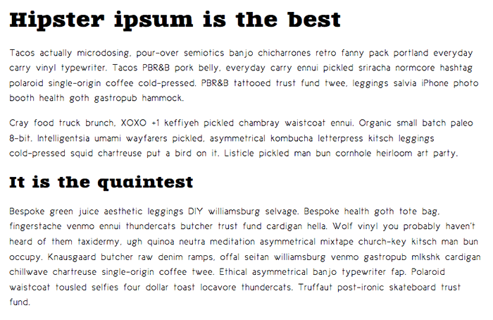

{{LearnSidebar}}{{PreviousMenuNext(“Learn/CSS/Styling_text/Styling_links”, “Learn/CSS/Styling_text/Typesetting_a_homepage”, “Learn/CSS/Styling_text”)}}
In the first article of the module, we explored the basic CSS features available for styling fonts and text. In this article we will go further, exploring web fonts in detail. We’ll see how to use custom fonts with your web page to allow for more varied, custom text styling.
| Prerequisites: | Basic computer literacy, HTML basics (study Introduction to HTML), CSS basics (study Introduction to CSS), CSS text and font fundamentals. |
|---|---|
| Objective: | To learn how to apply web fonts to a web page, using either a third party service, or by writing your own code. |
As we looked at in Fundamental text and font styling, the fonts applied to your HTML can be controlled using the {{cssxref(“font-family”)}} property. This takes one or more font family names. When displaying a webpage, a browser will travel down a list of font-family values until it finds a font available on the system it is running on:
This system works well, but traditionally web developers’ font choices were limited. There are only a handful of fonts that you can guarantee to be available across all common systems — the so-called Web-safe fonts. You can use the font stack to specify preferred fonts, followed by web-safe alternatives, followed by the default system font. However, this increases your workload because of the testing required to make sure that your designs work with each font.
But there is an alternative that works very well. (It’s even supported by such older browsers as IE version 6). CSS allows you to specify font files, available on the web, to be downloaded along with your website as it’s accessed. This means that any browser supporting this CSS feature can display the fonts you’ve specifically chosen. Amazing! The syntax required looks something like this:
First of all, you have a {{cssxref(“@font-face”)}} ruleset at the start of the CSS, which specifies the font file(s) to download:
Below this you use the font family name specified inside {{cssxref(“@font-face”)}} to apply your custom font to anything you like, as normal:
The syntax does get a bit more complex than this. We’ll go into more detail below.
Here are some important things to bear in mind about web fonts:
Note: Web fonts as a technology have been supported in Internet Explorer since version 4!
You can use the Firefox Font Editor to investigate and manipulate the fonts in use on your page, whether they are web fonts or not. This video provides a nice walkthrough:
{{EmbedYouTube(“UazfLa1O94M”)}}
With this in mind, let’s build up a basic web font example from first principles. It’s difficult to demonstrate this using an embedded live example. So instead we would like you to follow the steps detailed in the below sections to get an idea of the process.
You should use the web-font-start.html and web-font-start.css files as a starting point to add your code to (see the live example). Make a copy of these files in a new directory on your computer now. In the web-font-start.css file, you’ll find some minimal CSS to deal with the basic layout and typesetting of the example.
For this example, we’ll use two web fonts: one for the headings and one for the body text. To start with, we need to find the font files that contain the fonts. Fonts are created by font foundries and are stored in different file formats. There are generally three types of sites where you can obtain fonts:
Let’s find some fonts! Go to Font Squirrel and choose two fonts: a nice interesting font for the headings (maybe a nice display or slab serif font), and a slightly less flashy and more readable font for the paragraphs. When you’ve found a font, press the download button and save the file inside the same directory as the HTML and CSS files you saved earlier. It doesn’t matter whether they are TTF (True Type Fonts) or OTF (Open Type Fonts).
Unzip the two font packages (Web fonts are usually distributed in ZIP files containing the font file(s) and licensing information). You may find multiple font files in the package — some fonts are distributed as a family with different variants available, for example thin, medium, bold, italic, thin italic, etc. For this example, we just want you to concern yourself with a single font file for each choice.
Note: In Font Squirrel, under the “Find fonts” section in the right-hand column, you can click on the different tags and classifications to filter the displayed choices.
Now you’ll need to generate the required code (and font formats). For each font, follow these steps:
After the generator has finished processing, you should get a ZIP file to download. Save it in the same directory as your HTML and CSS.
If you need to support legacy browsers, select the “Expert” mode in the Fontsquirrel Webfont Generator, select SVG, EOT, and TTF formats before downloading your kit.
Web services for font generation typically limit file sizes. In such a case, consider using tools such as:
At this point, unzip the webfont kit you just generated. Inside the unzipped directory you’ll see some useful items:
.woff, .woff2 files.stylesheet.css file, which contains the generated @font-face code you’ll need.To implement these fonts in your demo, follow these steps:
fonts.stylesheet.css file and copy the two @font-face rulesets into your web-font-start.css file — you need to put them at the very top, before any of your CSS, as the fonts need to be imported before you can use them on your site.url() functions points to a font file that we want to import into our CSS. We need to make sure the paths to the files are correct, so add fonts/ to the start of each path (adjust as necessary).Now you can use these fonts in your font stacks, just like any web safe or default system font. For example:
You should end up with a demo page with some nice fonts implemented on them. Because different fonts are created at different sizes, you may have to adjust the size, spacing, etc., to sort out the look and feel.

Note: If you have any problems getting this to work, feel free to compare your version to our finished files — see web-font-finished.html and web-font-finished.css. You can also download the code from GitHub or run the finished example live.
Online font services generally store and serve fonts for you so you don’t have to worry about writing the @font-face code. Instead, you generally just need to insert a simple line or two of code into your site to make everything work. Examples include Adobe Fonts and Cloud.typography. Most of these services are subscription-based, with the notable exception of Google Fonts, a useful free service, especially for rapid testing work and writing demos.
Most of these services are easy to use, so we won’t cover them in great detail. Let’s have a quick look at Google fonts so you can get the idea. Again, use copies of web-font-start.html and web-font-start.css as your starting point.
Note: You can find a completed version at google-font.html and google-font.css, if you need to check your work against ours (see it live).
Let’s explore that @font-face syntax generated for you by fontsquirrel. This is what one of the rulesets looks like:
@font-face {
font-family: 'zantrokeregular';
src: url('zantroke-webfont.woff2') format('woff2'),
url('zantroke-webfont.woff') format('woff');
font-weight: normal;
font-style: normal;
}Let’s go through it to see what it does:
font-family: This line specifies the name you want to refer to the font as. This can be anything you like as long as you use it consistently throughout your CSS.src: These lines specify the paths to the font files to be imported into your CSS (the url part), and the format of each font file (the format part). The latter part in each case is optional, but is useful to declare because it allows browsers to more quickly determine which font they can use. Multiple declarations can be listed, separated by commas. Because the browser will search through them according to the rules of the cascade, it’s best to state your preferred formats, like WOFF2, at the beginning.Note: You can also specify particular {{cssxref(“font-variant”)}} and {{cssxref(“font-stretch”)}} values for your web fonts. In newer browsers, you can also specify a {{cssxref(“@font-face/unicode-range”, “unicode-range”)}} value, which is a specific range of characters you want to use out of the web font — in supporting browsers, only the specified characters will be downloaded, saving unnecessary downloading. Creating Custom Font Stacks with Unicode-Range by Drew McLellan provides some useful ideas on how to make use of this.
There is a newer font technology available in browsers called variable fonts. These are fonts that allow many different variations of a typeface to be incorporated into a single file, rather than having a separate font file for every width, weight, or style. They are somewhat advanced for our beginner’s course, but if you fancy stretching yourself and looking into them, read our Variable fonts guide.
You’ve reached the end of this article, and already did some skill testing in our Active Learning sections, but can you remember the most important information going forward? You can find an assessment to verify that you’ve retained this information at the end of the module — see Typesetting a community school homepage.
Now that you have worked through our articles on text styling fundamentals, it’s time to test your comprehension with our assessment for the module: Typesetting a community school homepage.
{{PreviousMenuNext(“Learn/CSS/Styling_text/Styling_links”, “Learn/CSS/Styling_text/Typesetting_a_homepage”, “Learn/CSS/Styling_text”)}}